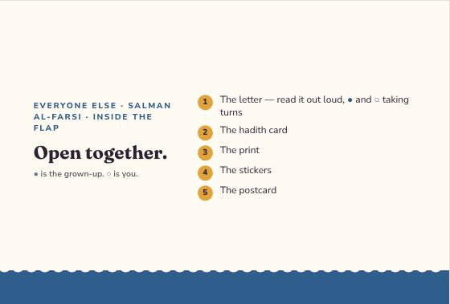
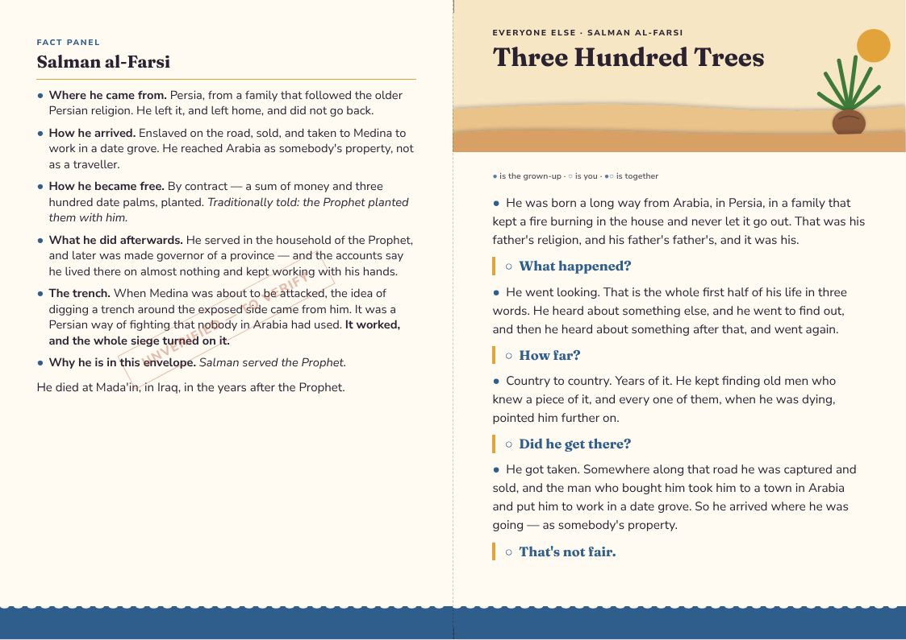
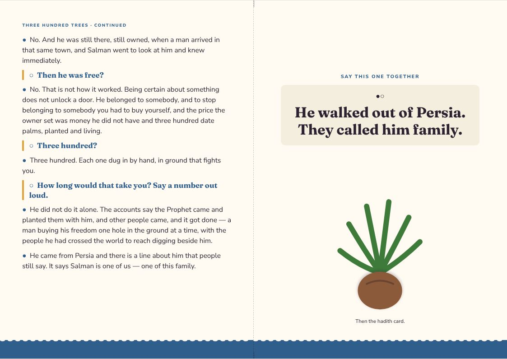
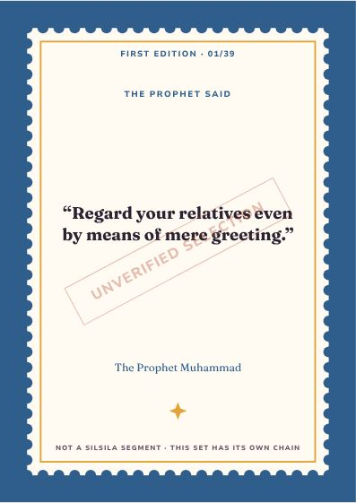
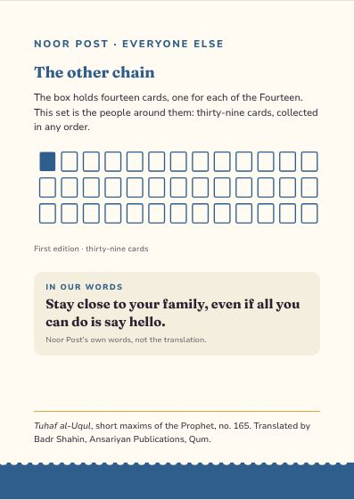
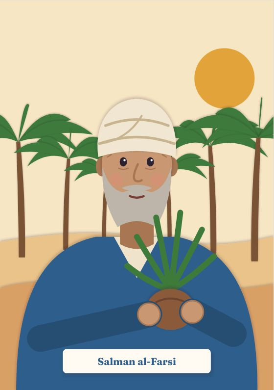
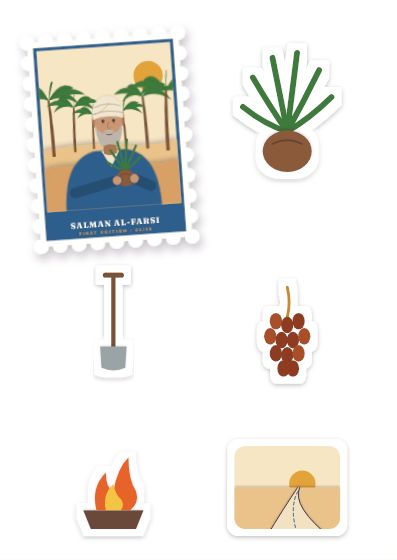
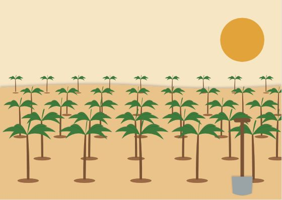

Everyone Else
Salman al-Farsi
Salman served the Prophet.
Inside the flap
Open together.
- The letter — read it out loud, ● and ○ taking turns
- The hadith card
- The print
- The stickers
- The postcard
● is the grown-up. ○ is you.
Three Hundred Trees
● the grown-up · ○ the child · ●○ together
●He was born a long way from Arabia, in Persia, in a family that kept a fire burning in the house and never let it go out. That was his father's religion, and his father's father's, and it was his.
○What happened?
●He went looking. That is the whole first half of his life in three words. He heard about something else, and he went to find out, and then he heard about something after that, and went again.
○How far?
●Country to country. Years of it. He kept finding old men who knew a piece of it, and every one of them, when he was dying, pointed him further on.
○Did he get there?
●He got taken. Somewhere along that road he was captured and sold, and the man who bought him took him to a town in Arabia and put him to work in a date grove. So he arrived where he was going — as somebody's property.
○That's not fair.
●No. And he was still there, still owned, when a man arrived in that same town, and Salman went to look at him and knew immediately.
○Then he was free?
●No. That is not how it worked. Being certain about something does not unlock a door. He belonged to somebody, and to stop belonging to somebody you had to buy yourself, and the price the owner set was money he did not have and three hundred date palms, planted and living.
○Three hundred?
●Three hundred. Each one dug in by hand, in ground that fights you.
○How long would that take you? Say a number out loud.
●He did not do it alone. The accounts say the Prophet came and planted them with him, and other people came, and it got done — a man buying his freedom one hole in the ground at a time, with the people he had crossed the world to reach digging beside him.
●He came from Persia and there is a line about him that people still say. It says Salman is one of us — one of this family.
●○He walked out of Persia. They called him family.
Letter, reverse
SALMAN AL-FARSI
●Where he came from. Persia, from a family that followed the older Persian religion. He left it, and left home, and did not go back.
●How he arrived. Enslaved on the road, sold, and taken to Medina to work in a date grove. He reached Arabia as somebody's property, not as a traveller.
●How he became free. By contract — a sum of money and three hundred date palms, planted. Traditionally told: the Prophet planted them with him.
●What he did afterwards. He served in the household of the Prophet, and later was made governor of a province — and the accounts say he lived there on almost nothing and kept working with his hands.
●The trench. When Medina was about to be attacked, the idea of digging a trench around the exposed side came from him. It was a Persian way of fighting that nobody in Arabia had used. It worked, and the whole siege turned on it.
●Why he is in this envelope. Salman served the Prophet.
He died at Mada'in, in Iraq, in the years after the Prophet.
Hadith card · First Edition 01 / 39
Regard your relatives even by means of mere greeting.
Tuhaf al-Uqul, short maxims of the Prophet, no. 165 · trans. Badr Shahin
A saying of the Prophet, matched to who counts as family.
Selected, confidence medium — on the verification worklist and not yet cleared for print.
The design
Everyone Else — one style for the line
Every companion envelope shares one style, so the thirty-nine belong together: each front carries its person as a stamp. Every item at true size → · Print PDF

















The artwork fixes composition, colour and medium for every item; final illustration is still to be commissioned. The fact panel is still to verify.